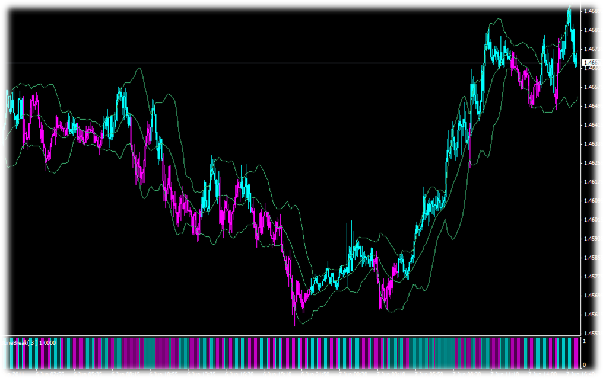
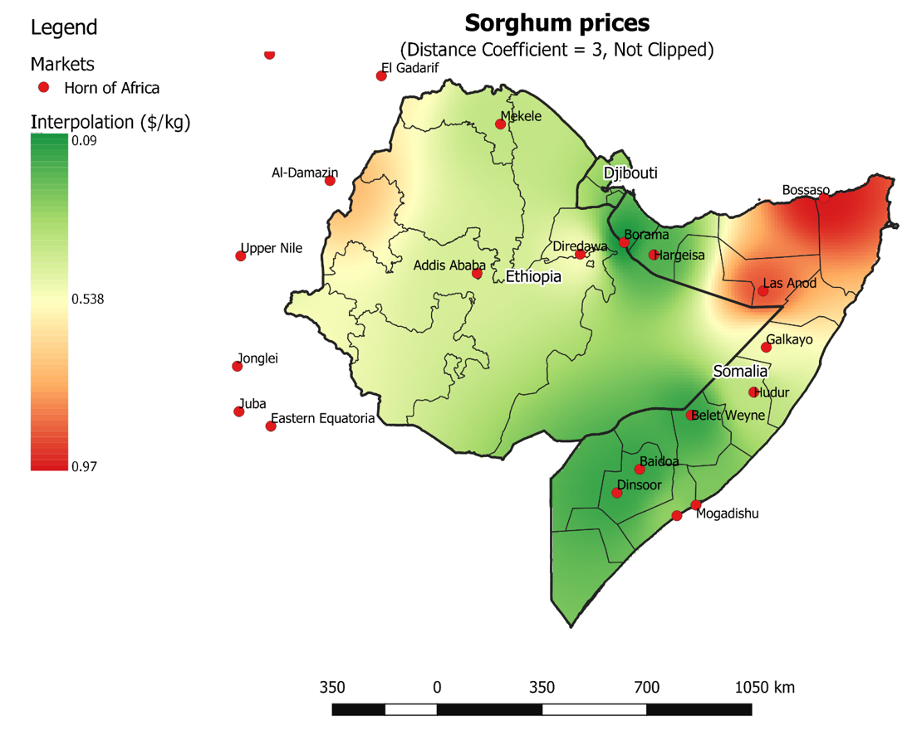
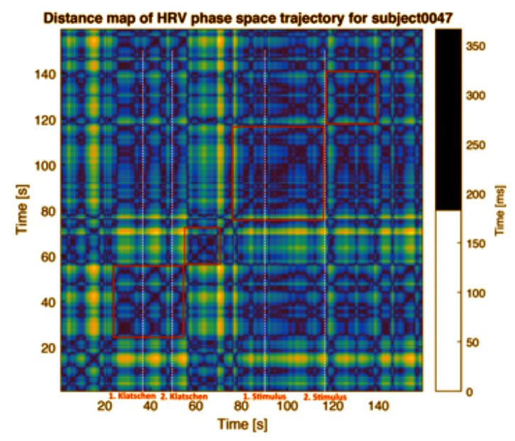

- Advanced Analytics für den Business Sektor

Mein besonderer Fokus im Advanced Analytics Bereich liegt auf der Entwicklung von prädiktiven Datenmodellen
für die unterschiedlichsten Businessbereiche und Branchen wie Investment, Entertainment, Immobilien, Retail,
Gesundheit/Fitness, Logistik, usw.
Die entwickelten Modelle dienen der Steigerung des Abverkaufs, Optimierung des Marketings, der omplexen
Entscheidungsunterstützung (decision support), der Optimierung von Prozessen, Identifikation von Betrug und Absprung
(fraud and churn detection), dem Social Scoring, uvm.
- Advanced Analytics für den Public Sektor

In diesem Bereich engagieren sich mein Team und ich in der Erforschung und der Vorhersage von
Hungerkatastrophen sowie Migrations- sowie Flüchtlingsströme (food insecurity and migration). Dabei nutzen wir
Open Access Data, da die Datenlage und Datenqualität aus Krisengebieten häufig sehr problematisch ist.
- Advertising Analytics / Emotion Recognition

In diesem Bereich liegt unser Fokus auf der psycho-physiologischen Erforschung von zerebralen und vegetativen Reaktionen
auf Werbereize wie z.B. Werbevideos und Anzeigenwerbung. Dies dient der Bestimmung und Optimierung der
Werbewirkung. Desweiteren beschäftigen wir uns mit affektiver Forschung, insbesondere der Erkennung und Interpretation von starken Emotionen.